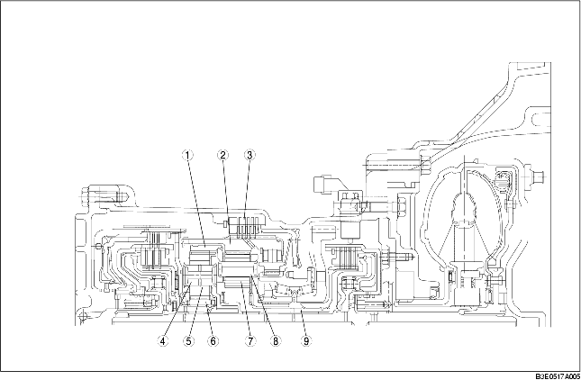

• Den främre planetväxeln är integrerad med envägskopplingens yttre bana och inkopplad med medbringarskivan på låg- och backbroms.
På grund av detta, när den främre planetväxeln roterar, kommer envägskopplingens yttre bana och medbringarskivan på låg- och backbroms också att rotera tillsammans.
• Det främre solhjulet är monterat på insidan av de främre planethjulen och främre planetväxelns ringhjul är monterat på utsidan av de främre planethjulen. Det främre solhjulet är i ingrepp med framkopplingsnavet och främre planetväxelns ringhjul är i ingrepp med bakre planethjulsbäraren.
• Den bakre planetväxeln och det bakre planethjulet har det bakre solhjulet monterat innanför och bakre planetväxelns ringhjul utanför. Det bakre solhjulet är i ingrepp med turbinaxeln via 2-4 bromstrumma och bakre planetväxelns ringhjul är i ingrepp med primärväxeln via främre planethjulsbäraren.

.